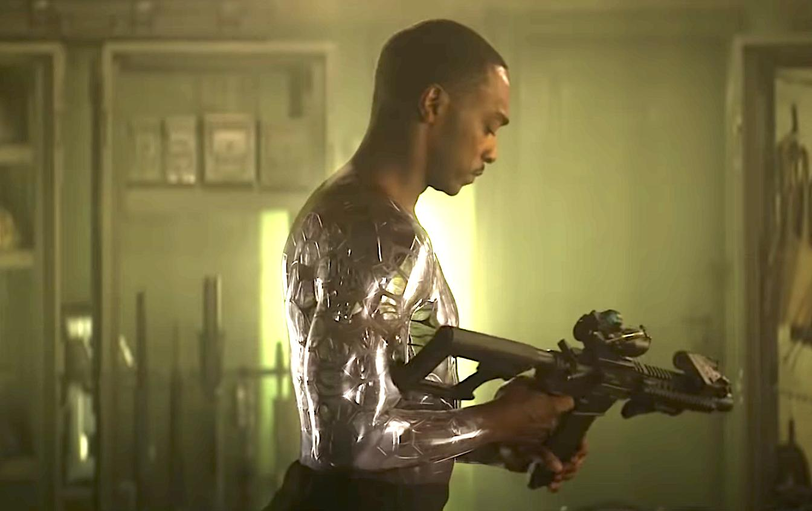

Free Download Outside the Wire (2021) Hindi Dubbed Full Movie Dual Audio (Hindi-English). This is a dual audio movie and available in 480p & 720p quality. This movie is based on Action, Adventure & Fantasy Genre. It features Anthony Mackie, Damson Idris, Enzo Cilenti as the main star cast of the movie. This movie is now dubbed in Hindi in 720p & 480p & 1080p MKV. This Print comes with very Good Audio and WEB-DL..
iWatchEverything.unaux.com is the best Website to To Download Hollywood Movies, Web Series, Tv Series, Hindi Dubbed And Multi Audio Movies. We Are Providing You Direct Secure Google Drive Link For Fast Downloading. Just Click On Download Button To Download All Movies In Few Clicks And Seconds. Also You Can Watch Movies Online.
Outside the Wire (2021)
126 min|Action, Sci-Fi|26 Jul 2013
Rating: 6.7 / 10 from 432,902 users
Emma Norman spends a wild Spring break holiday on Mintners Cove beach, California, with her female friends, Lori, who seeks a new fling and academic Stefanie.
Director: Donald Wrye
Creator: Donald Wrye
Actors: Odette Annable, Antonio Sabato Jr., Johnny Barker, Hannah Banks
Download Outside the Wire (Hindi Dubbed) 480p – 720p – 1080p ~ iWatchEverything.unaux.com
Movie Info:
Full Name: Outside the Wire
Release Year: 2021
Country: India
Subtitles: English
Runtime: 1h 54m
Language: Dual Audio [English+Hindi]
Quality: 480p & 720p & 1080p
Size: 350mb & 1gb & 2.5gb
Plot/Storyline:
In 2036, a civil war between pro-Russian insurgents and local resistances in Ukraine leads the US to deploy peacekeeping forces. During an operation, a team of United States Marines and “Gumps” (robotic soldiers) are ambushed. Disobeying an order, drone pilot 1st Lt. Harp deploys a Hellfire missile in a drone strike against a suspected enemy launcher, killing 2 Marines but saving 38. As punishment, Harp is sent to Camp Nathaniel, the US base of operations in Ukraine where he is assigned to Captain Leo, a highly advanced and experimental android super-soldier masquerading as a human officer.
ScreenShots:

Helpful Right? If you are looking for Outside the Wire (2021) Movie Download in Hindi Dubbed then don’t worry. Below you can easily find the download link. Enjoy Our Service!!
Download Outside the Wire (2021) Dual Audio (Hindi-English).
Thanks for visiting iWatchEverything Website he hub for Hollywood Movies & TV Series for downloading Outside the Wire (2021) dual audio.